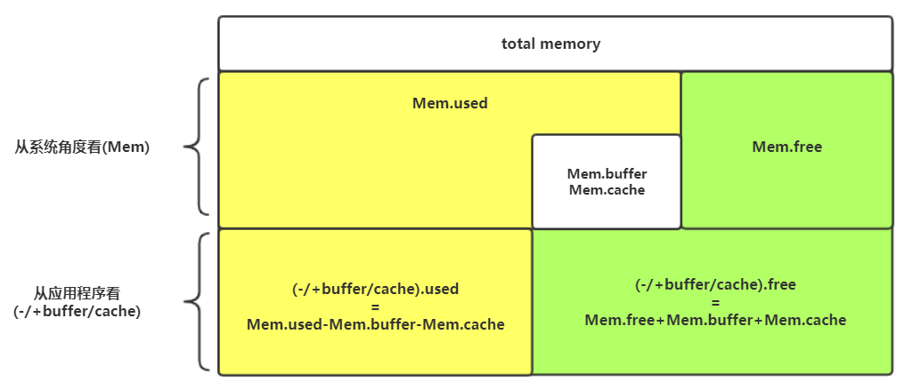

0x01
Scala隐式转换
使用隐式转换对类的功能进行拓展，通常可以用于扩展第三方类的方法（如添加show()展示元素），而无需派生（extends、with等）出新的类型。
以拓展String类型为例，将String作为入参（其他类型同理），通常使用隐式扩展功能，要么返回一个已定义的class（spark源码使用的方式），要么隐式定义一个新的class，如下：
1 | object Solution1 { |
隐式转换函数在同个作用域下，与名字无关，与入参类型有关。
0x02
Docker内配置git账户
最近几天在学习docker的时候，使用Dockerfile构建image，但在配置ssh时需要拷贝一份可以访问git的ssh-key，然后注入image，并且想要在Dockerfile直接运行git clone等操作也会提示失败，需要对Dockerfile作出比较复杂的配置，详见：Using SSH keys inside docker container。
因此最后决定使用https方式，通过在github端生成tokens的url，接着配置在Dockerfile里的RUN即可，详见
Fetching private GitHub repos from a Docker container。
github端： Your Profile → Settings → Personal Access Tokens → Generate New Token生成token，然后配置
1 | git config --global url."https://{token}:@github.com/".insteadOf "https://github.com/" |
其实无论ssh-key方式还是https方式，都会导致image中存储这些访问信息，生产环境下不推荐使用。
0x03
偏函数（PartialFunction）、部分应用函数（Partial Applied Function）和柯里化(Currying)
偏函数
在scala中，可以利用模式匹配来扩展创建偏函数，偏函数是一种特殊的一元函数，并不支持处理所输入参数的所有情况。类型为PartialFunction[-T,+V]。T是接收的类型，V是返回的结果类型
如下，下列偏函数是求平方根，并且在input为负数的时候不做处理。
1 | val squareRoot: PartialFunction[Double, Double] = { |
可以使用isDefinedAt来确认该偏函数是否能够处理某个特定的值。
1 | squareRoot.isDefinedAt(2) shouldEqual true |
偏函数之间彼此也可以使用orElse 或者 andThen相互连接。
1 | val positive: PartialFunction[Int, Int] = { |
compose可以进行一次预处理。
1 | // 只处理1 |
偏函数的这项特性，在实现一个验证系统的时候非常有用，我们可以实现一系列的检查去验证输入的数据是否符合要求。
1 | val finalCheck = check1 andThen check2 andThen check3 ... |
当新增或者移除的时候也十分方便。
Scala也可以将偏函数应用于collections，collect方法将一个偏函数作为输入参数，将这个偏函数作用于各个值上，跳过超出函数中定义的元素。
1 | val greaterThan20: PartialFunction[Any, Int] = { |
部分应用函数（Partially Applied Functions）
在函数式编程中，对一个有参数的函数的调用也可以看成将函数应用到参数上。
当一个函数带着所有参数被调用时，就叫做将函数完整（fully applied）的应用到每个参数上。当只传递参数的子集到函数也是可以通过的，将返回一个部分应用函数（Partially Applied Functions）。Scala中不会因为你只传递部分参数而抛出一个异常，而是简单的将其应用并返回一个新的带着剩余需要你传递的参数的函数。
1 | val divide = (num: Double, den: Double) => { |
我们在求某个值的一般的时候，可以知道分母必定为2，所以halfOf通过部分应用除的函数得到求半的功能。_占位符表示剩余的参数。
部分应用函数很容易跟Scala中的柯里化（Currying）混淆。两者都能减少函数中的参数数量，但是柯里化将部分应用函数的概念进行了更加深层次的扩展。
柯里化是将一个带有多个参数的函数拆分为一系列函数，每个函数带有单独的参数。
1 | val curriedDivide: (Double) => (Double) => Double |
curriedDivide函数的类型为(Double) => (Double) => (Double)，表示将divid函数拆分为两个函数，每个函数各自带着一个参数，参数根据原本的顺讯决定。
1 | val halfOf: (Double) => Double = curriedDivide(_)(2) |
柯里化跟部分应用函数的好处是能够根据原本的通用函数，创建出一个特定的函数而不用创建新的代码，使得代码较为简洁，避免冗余。
0x04
Scala中的Left与Right
Scala中的Either代表两个可能的值中的其中一个，有Left跟Right组成。除了作为二选一之外，通常也可作为异常值的处理，约定Left代表异常值，Right代表正常输出（与Try等价，也是代表异常的一种）。
Left，Right可以用match匹配（跟Option类似）：
1 | val in = Console.readLine("Type Either a string or an Int: ") |
Either还提供了投影（projection）操作，可单独对任意一边进行操作，也可改变类型，但是最终结果仍为原本有值的那边。
1 | val l: Either[String, Int] = Left("flower") |
- fold：对两边同时进行操作。
- swap：对两边的内容进行交换。
- merge：合并两边的结果，通常为Any。
与Try[A <: Exception, B] 可相互进行转化：
1 | import scala.util.{ Either, Failure, Left, Right, Success, Try } |
0x05
马克飞象与mathpix
给大家推荐两个提高工作效率的软件
- 马克飞象：一个很方便的markdown编辑器，支持与印象笔记同步绑定，主要是使用简单，没有那么多繁琐的界面之类的，
- mathpix：数学公式利器，只要通过快捷键截取数学公式，即可自动转为markdown语法。
0x06
关于mkfs.ex4的inode
最近在工作中遇到服务器磁盘格式化的事后，对相关查询命令进行了一点挖掘，命令如下：
1 | mkfs.ext4 /dev/sda1 |
查询资料后发现，上述命令存在着优化空间，可以增大bytes per inode来节省部分磁盘空间，默认按照每16k建立一个inode来得到inode数量。
inode：用于存储文件的元数据，inode越多，磁盘可以存放的文件数量越多，但是过多的inode会占用磁盘空间（一个inode占用128/256字节），若磁盘上的文件都是大文件，显然16k会导致建立较多不必要的inode，从而浪费磁盘空间。
1 | ## -T 指定默认参数，其中largefile 每1M建立一个inode |
访问文件的实际流程：
访问(ls -i)文件（夹）名对应的inode号码->通过inode号码，获取inode信息->根据inode信息，找到文件数据所在的block，读取数据。
所以文件（夹）实际上只存储了名字跟inode号码，如果只有读权限，那么只能访问到名字，其余信息都存在inode里，而访问inode则需要执行权限（X）。
0x07
Coursera
最近发现有个国外的网络课程平台Coursera，有各种知名大学教授的课程，其中台湾大学林轩田教授的机器学习基石课程对于没什么相关基础的人来说，是一个很好的入门课程，在此推荐下。
0x08
StringBuilder的一些使用事项
关于StringBuilder，有几个需要注意的使用特性：
- 非线程安全(重要)，使用到StringBuffer的场景很少，因为几个线程轮流append的场景以目前的工作经验来看并没遇到，而且方法间并不保障线程安全。
1 | object PathUtil { |
- Java中一次性使用多个
+拼接字符串时，会自动优化为一个StringBUilder()拼接多个字符串，分为多条语句使用+则会有多个StringBilder(可查看编译后的字节码)。 - 设定好
StringBuilder(int length)的初始长度，可以避免发生内部char[]数组发生扩容（类似ArrayList扩容）。eg：假如使用StringBuilder的默认长度，会为129长度的字符串拼接，合共申请625字符的数组。 - 重用StringBuilder()，可以使用
clear()方法，进行重用，StringBuilder的toString()源码为return new String(value, 0, count)，clear()方法本质上是将count置为0。重用的时候要注意线程安全，使用ThreadLocal，但要权衡使用的代价。
此处可以参考BigDecimal源码的写法：
1 | public class BigDecimal extends Number implements Comparable<BigDecimal> { |
参考：
0x09
Regex tutorial — A quick cheatsheet by examples
A quick cheatsheet by examples
该文章介绍了几个最常用的正则表达式，且条理清晰，层次分明，此处做个总结学习。
锚——^和$
| regex | remark |
|---|---|
| ^The | 匹配以The开头的字符 |
| end$ | 匹配以end结尾的字符 |
| ^The end$ | 匹配The end的字符串 |
| roar | 匹配任何包含roar的文本 |
量词—— * + ? 和{}
| regex | remark |
|---|---|
| abc* | 匹配ab后面跟着0个或者多个c的字符 |
| abc? | 匹配ab后面跟着0个或者1个c的字符 |
| abc+ | 匹配ab后面跟着1个或者多个c的字符 |
| abc{2} | 匹配ab后面跟着2个c的字符 |
| abc{2,} | 匹配ab后面跟着2个或者多个c的字符 |
| abc{2,5} | 匹配ab后面跟着2到5个c的字符 |
| a(bc)* | 匹配a后面跟着0个或者多个bc的字符 |
| a(bc){2,5} | 匹配a后面跟着2到5个bc的字符 |
或操作—— | 或 []
| regex | remark |
|---|---|
| a(b|c) | 匹配a后面跟着b或c的字符 |
| a[bc] | 同上 |
字符类—— \d \w \s 和 .
| regex | remark |
|---|---|
| \d | 匹配一个数字的字符 |
| \w | 匹配一个单词的字符（字母数字下划线） |
| \s | 匹配一个空白的字符（包括tabs跟换行符） |
| . | 匹配任意字符 |
.需要谨慎使用，因为类或否定字符类(我们将在下一节讨论)通常更快更精确。
对于\d, \w 和 \s，其大写通常表示否定，比如：
1 | \D 匹配一个非数字的字符 |
有时候需要匹配一些特殊字符，如 ^.[$()|*+?{\，此时需要在前面添加\进行转义:
1 | \$\d 匹配前面为$的数字字符 |
一些无法直接打印出来的字符也可以匹配，如tab \t，换行符 \n及\r。
标记
正则表达式经常使用/划分为两块，前面部分为上述提到的匹配符，后半部分则为标记：
| regex | remark |
|---|---|
| g(glabal) | 第一次匹配后不停止，继续匹配，最后返回全部匹配到的字符 |
| m(multi-line) | 若指定了^和$，则会匹配多行后并返回 |
| i(insensitive) | 忽略大小写区别 |
分组，捕获
| regex | remark |
|---|---|
| a(bc) | 括号内创建了一个具有bc值的分组 |
| a(?:bc)* | 使用?:禁用分组 |
| a(?< foo>bc) | 使用?<foo>将分组命名为foo |
假设有下列字符
1 | abc ac acb aob a2b a42c A87d |
- 使用
a(bc)*匹配，部分匹配结果：
- 使用
a(?:bc)*匹配，部分匹配结果：
分组特性很有用，当我们需要从匹配到的字符中提取信息的时候，分组会以数组的形式存在在Full match中，我们只需要指定下标即可访问对应分组。
中括号——[]
| regex | remark |
|---|---|
| [abc] | 匹配a或b或c的字符 |
| [a-c] | 同上 |
| [0-9] | 匹配0-9的数字字符 |
| [^a-zA-Z] | 匹配非a-z，A-Z的字符，^表示反义 |
在中括号[]中，所有特殊符号（如^，$）都会失去特殊意义变成普通的字符，而不需要使用\进行转义。
贪心与懒匹配
量词* + {}属于贪心操作，它们会尽可能远的匹配字符。
例如，使用<.+>去匹配<div>simple div</div> 会得到<div> simple div</div>。
若要只匹配<div>，则可以使用<.+?> 让其进行懒匹配。
更好的解决方案是不使用.而是使用更加严谨的表达式<[^<>]+>
边界符——\b和\B
| regex | remark |
|---|---|
| \babc\b | 匹配单独一个单词abc，需要与其他字符隔开（如空格），类似于锚^和$，但不强制局限于每行的开头与结尾 |
| \Babc\B | 匹配abc，不需要与其他单词隔开，类似于锚^和$，但不强制局限于每行的开头与结尾 |
0x0A
Kafka越界查询命令
Kafka查看消费者是否越界：
- 首先列出topic对应consumer group的当前offset及其最新可消费的offset。
1 | kafka-run-class kafka.tools.ConsumerOffsetChecker --zookeeper zkhost:port --topic topic_name --group topic_name_group |
- 再列出topic的最早offset。
1 | kafka-run-class kafka.tools.GetOffsetShell --topic topic_name --time -2 --broker-list kafkahost:port |
- 使用excel对partition排序，就能确认消费者消费的offset是向前还是向后越界。
python数组遍历
python遍历数组且带下标：
1 | _list = ['a', 'b', 'c', 'd', 'e'] |
0x0B
使用fsck校验hdfs文件完整性及recoverLease修复文件
hdfs文件系统可以使用fsck来check(校验)文件完整性，语法格式：hdfs fsck [file] [options]
以下option，由上往下需要相继结合使用：
| options | comment |
|---|---|
| -files | 校验时展示文件信息 |
| -blocks | 展示文件的块信息，通常与-files结合使用 |
| -locations | 展示文件块所在的datanode地址 |
| -racks | 展示文件机架信息 |
1 | # 检查某文件是否完整 |
示例输出：
1 | Connecting to namenode via http://localhost:50070/fsck?ugi=hdfs&files=1&blocks=1&racks=1&path=%2Fdata%2Fsw%2Fhttp%2FCZ%2F20190805%2F0000%2Fpart-0 |
假如文件有异常的话，我们可以观察到两种信息：
Under replicated
CORRUPT blockpool
修复Under replicated：
这种情况意味着还有其他replication存活，可使用recoverLease命令进行恢复：
1 | ## 寻找under replicated的文件 |
接下来使用recoverLeae命令修复：
1 | ## [-path path] HDFS path for which to recover the lease. |
修复corrupt blocks：
1 | ## 查找出损坏的文件并删除 |
参考：
How to fix corrupt HDFS FIles
How to use hdfs fsck command to identify corrupted files?
0x0C
Docker部署Elastic
可以通过docker快速部署一个elastic search，步骤如下：
1 | ## 拉取elastic官方镜像 |
对于elastic的其他版本，可以到Docker @ Elastic下载.
参考链接：https://www.elastic.co/guide/en/elasticsearch/reference/current/docker.html
0x0D
Linux下排查磁盘文件占满
- 首先查看真实文件占用
1 | ## -s, --summarize 只分别计算当前路径下每个文件(夹)的总占用 |
查看对应目录下逻辑上的磁盘占用情况
1
df -h /xxx
查看被进程占用的文件，并kill对应的pid
1
2## sort：-n 作为number排序， -k1 以第一列作为key排序，-t 可以指定分隔符
lsof -s|grep deleted|sort -n -k1如果df与du仍然不一致，根据具体场景，umount掉不必要的目录后，再次使用du查看占用，之后
rm -rf占用大的文件夹内容，再重新挂载。
word文件中插入代码
可以将代码黏贴到该网站，然后格式化后复制黏贴到word中：http://pygments.org/
Linxu下free命令输出相关
1 | ## 使用free查看 |
从操作系统(Mem)出发：
- Mem.total = Mem.used + Mem.free
- used：包含了buffers以及cached
- buffers：表示被系统buffer的内存，主要用于存放要输出到disk的数据。
- cached：表示被系统cahce的内存，主要用于存放从disk读取的数据。
- buffer跟cache都是为了提高系统I/O性能。
从程序角度(-/+ buffers/cache)出发：
- used：表示应用程序认为已经使用了多少内存，不包含buffers以及cached，且(-/+buffer/cache).used=Mem.used-Mem.buffer-Mem.cache
- free：表示应用程序认为系统还有多少内存，由于buffers以及cached都可以被系统快速回收，因此算在free里。(-/+buffer/cache).free = Mem.free + Mem.buffers + Mem.cached
大致布局如下：
